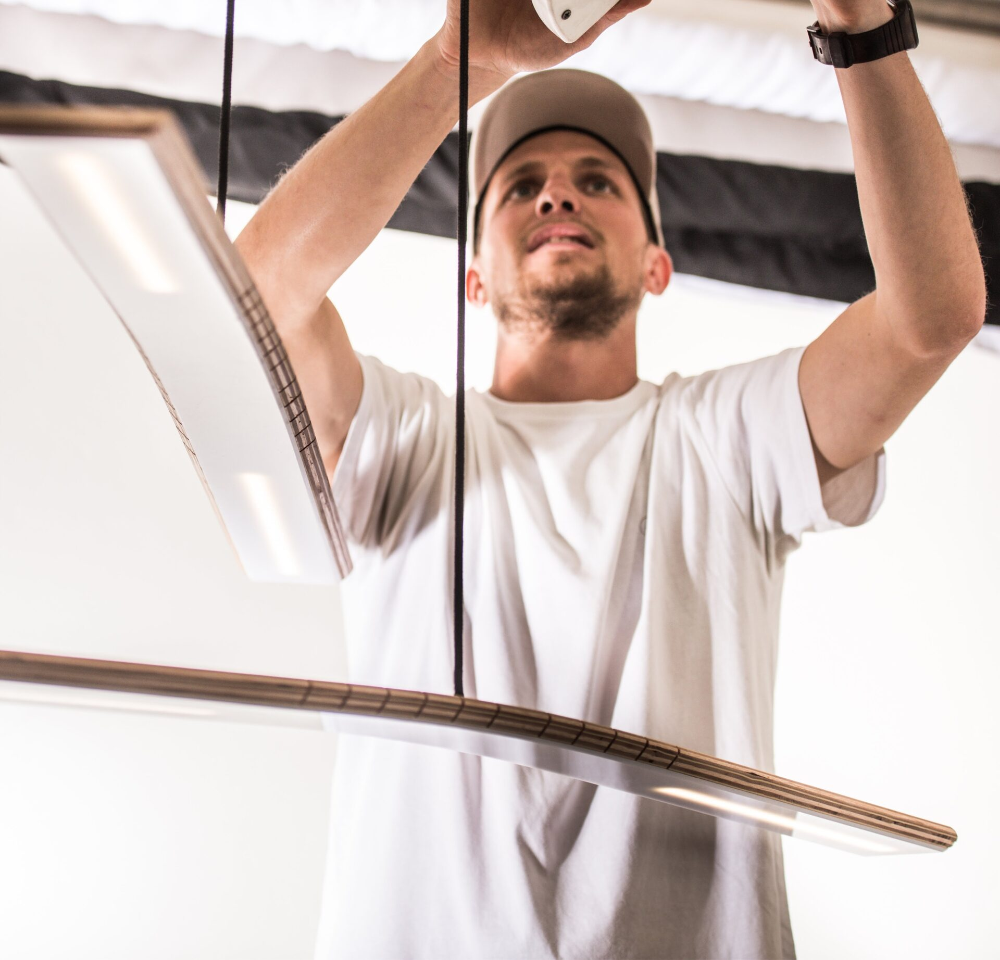

Where material
meets
intention.
From idea to production-ready design.
Simple solutions to complex things.
I make objects that earn their place. No ornament, no excess — just honest forms shaped by materials, craft, and real constraints. Every project starts with something tangible: a piece of wood, a tube, a production limit, a question worth answering.
The work shown here spans personal experiments and professional projects — furniture, lamps, speakers, vessels, products. Each one is a conversation between what I wanted to say and what the material allowed.
Every concept is born buildable. I don't design ideas that look good on screen but die in the factory. From the first sketch, I'm already thinking about how it will be manufactured — that saves you time and money down the road.

I make things — and I understand how they're made.
I grew up in a carpentry workshop in Argentina. Every resource counted. There were never big budgets, never spare parts. You learned to solve problems with what you had, and still make something worth keeping.
When you see how differently people around the world solve the same problems, you stop designing from assumptions and start designing from understanding.
Today I work between art and industry. My personal work is driven by material curiosity — wood, metal, ceramics. My professional work brings that same sensibility to products, furniture, and objects that need to be manufactured, sold, and lived with. Along the way, the projects I've been part of have been recognized with Red Dot (including Best of the Best), iF Design, Eurobike, MUSE, and European Product Design Awards — 10+ international awards between 2016 and 2025.
What I do for clients: Furniture design, product design, CMF (color, material, finish), 3D rendering, and prototyping. I take projects from first idea to production-ready files — or step in wherever the process needs me. If you're a brand looking for someone to develop a collection, a piece, or a product line, let's talk.
Based in Barcelona. Co-founder of Watif.
Good things start with a conversation.
Tell me a bit about what you're looking for and I'll get back to you.